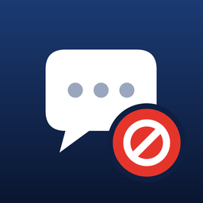

Spam Koruma
Bahis, dolandırıcılık ve reklam SMS'lerini ayırır
Ne yapar?
Bilinmeyen numaralardan gelen bahis, dolandırıcılık, kredi ve reklam SMS'lerini iPhone'daki Mesajlar uygulamasının Gereksiz klasörüne ayırır. Bu mesajlar için bildirim gelmez, mesajlar silinmez.
Doğrulama kodları ile banka, kargo, operatör ve e-Devlet bildirimleri engellenmez; istersen Mesajlar'daki İşlemler bölümünde toplanır.
Gizlilik
Mesajların telefondan çıkmaz. Uygulama hesap, reklam veya analiz aracı kullanmaz, hiçbir kişisel veri toplamaz.